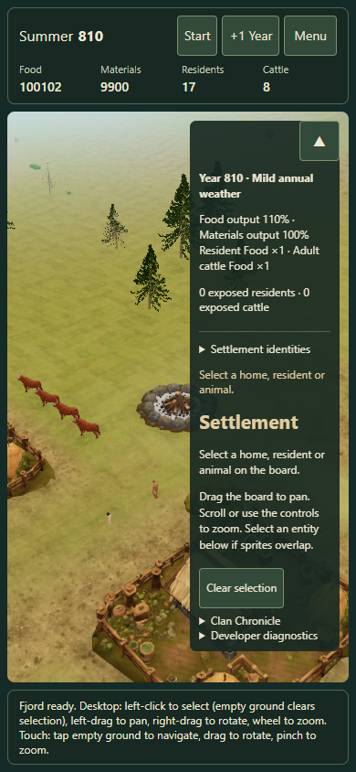

Return to your settlement
Issue #161. Returning keeps the campaign paused. A normal return retains the live scene; a real reload restores the saved island without a new landing animation.
Open the game with recovery diagnostics
Physical Safari review
- Open your existing campaign. Use Menu → Save locally as a backup. Note the season, year, resources and selected resident.
- Start the clock, leave Safari for 10 seconds, then return. Expect the same island and camera, a paused clock and no time gained while away.
- Repeat after 2 minutes in another app, then after a longer interval when practical. Safari may preserve the scene or genuinely reload the document. A cold return should say “Returning to your settlement…” and remain responsive.
- Use Start to continue, and confirm selection, camera gestures, people and resource totals still work.
- Open Menu → Download recovery diagnostics. Report the interval tested and whether the return was immediate, showed the resume screen, or became stuck. The trace distinguishes cached return from cold navigation.
The owner reports that the 10-second and 2-minute physical checks work. Exact device model and lifecycle classification were not supplied; a longer memory-pressure return remains unverified. Browser emulation is reported separately.
Automated evidence
Report and limitations · Browser results · Native history-navigation results
Public session checks and Chromium touch-size browser checks verify campaign identity, pause, save safety and recovery. Synthetic persisted events, real WebGL context loss and actual history navigation are labelled separately.
